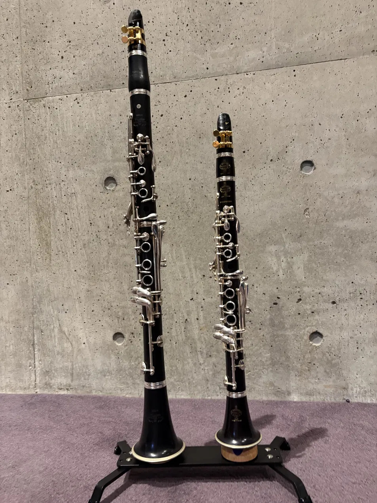
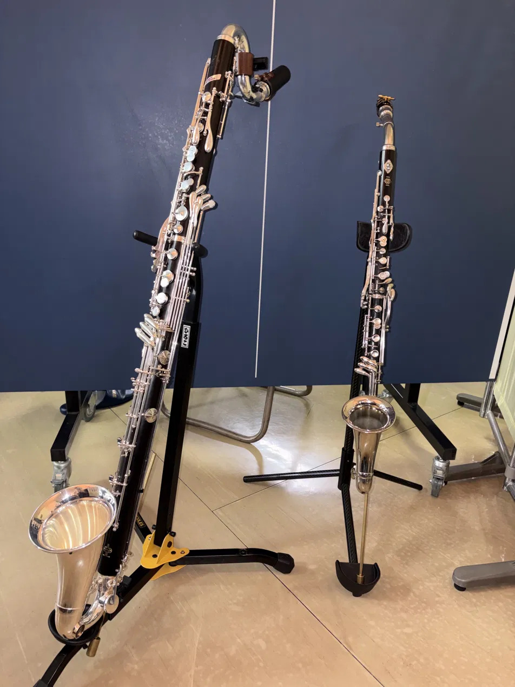

クラリネットの歴史
成り立ち


クラリネットは18世紀初頭にヨハン・クリストフ・デンナーによって開発されたといわれております。それまでは17世紀ごろに誕生したシャリュモーという楽器があり広く使われておりました。しかしこの楽器はまだまだ欠点が多くあるものでした。特に問題になるのが音域の狭さが挙げられます。これを改良し、さらに表現力を強くしたものがクラリネットになります。シャリュモーにはできなかった高音域まで対応したことが特徴です。一方シャリュモーの名残もありリードを使って演奏するという基本構造や音階の作り方などはそのままになり、また低い音域のことはシャリュモー音域と呼ぶなど、シャリュモーから発展したことが残っています。
発展
その後クラリネットはより安定した音を奏でるために改良が重ねれました。様々な音域に対応するため様々な種類が開発されています。現在は変ロ長調のB♭クラリネットが最も使用されている。これらの他にイ長調のAクラリネット、ハ長調のCクラリネット、B♭クラリネットより小さく高い音域の変ト長調のE♭クラリネット、それよりも高い音域の変イ長調のA♭クラリネット。そして低い音域を演奏するためアドルフ・サックスが現在の形を整えたバスクラリネット、バスクラよりは高くB♭よりは低いアルトクラリネット、バスクラよりも低いコントラアルトクラリネット、それよりも低いコントラバスクラリネット。これらが現代のオーケストラ、吹奏楽、アンサンブルでクラシックから現代曲までそのたくさんの音域を使い分けるように使われています。